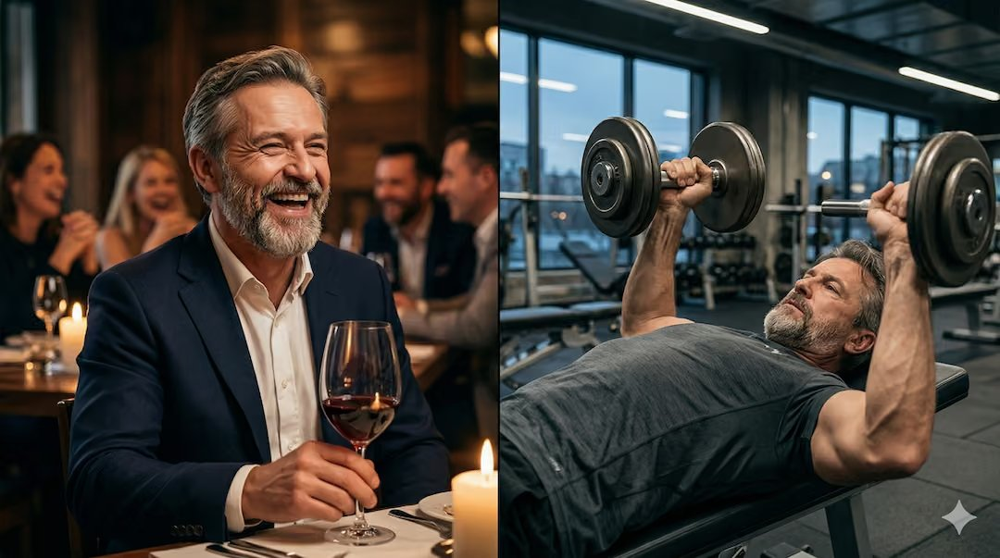
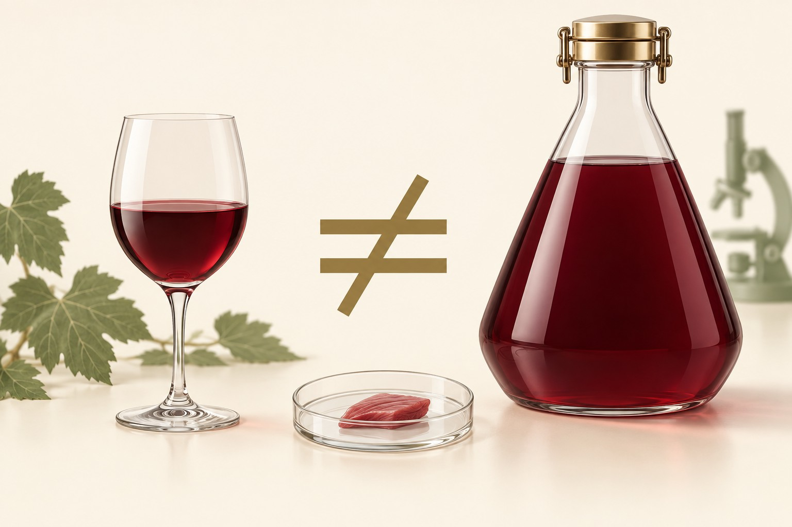
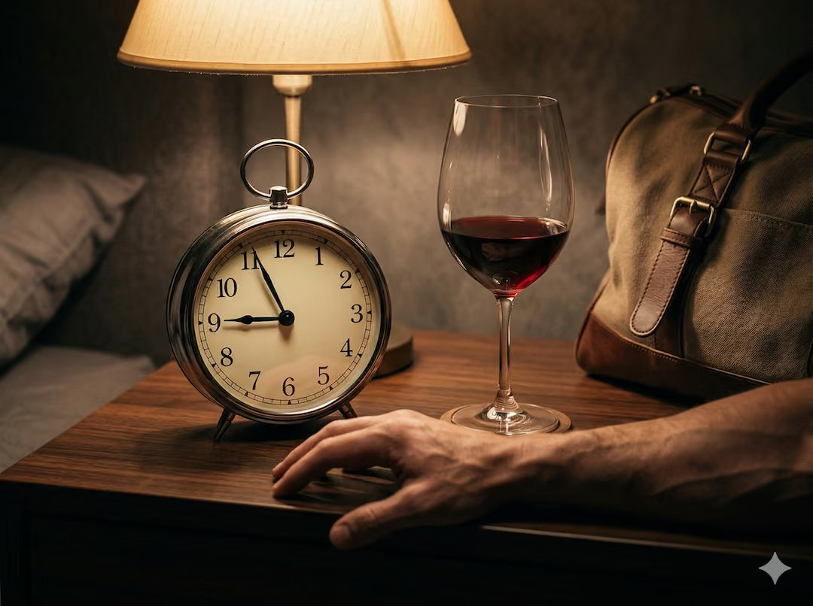
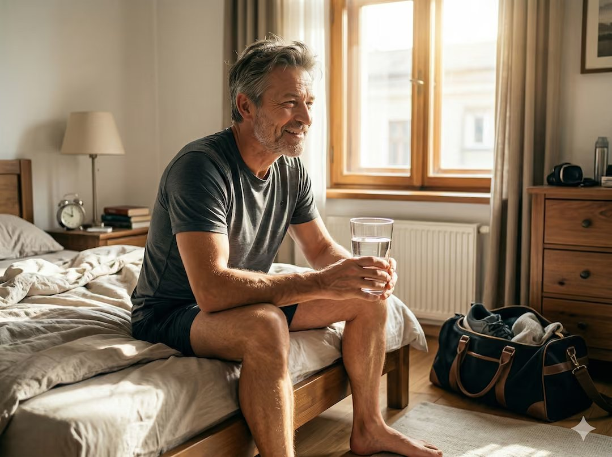
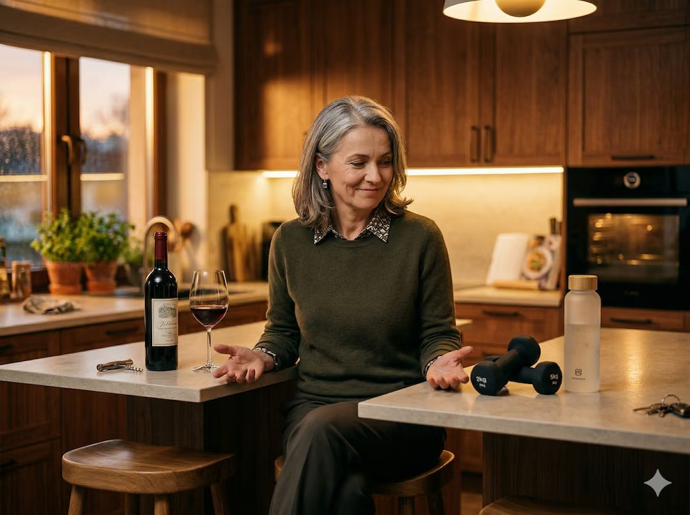

Szybka odpowiedź
Duża dawka alkoholu tuż po treningu obniżała w badaniu wczesną syntezę białek mięśniowych, ale nie wolno przypisywać tego samego efektu jednej lampce wina. Mniejsze dawki nadal mogą pogarszać sen. Jeśli zależy Ci na sile i regeneracji, najprościej nie pić po ciężkiej sesji; żadnej ilości alkoholu nie można jednak nazwać obojętną dla całego zdrowia.
Kluczowe wnioski
- Najmocniejszy eksperyment po treningu użył 1,5 g alkoholu na kilogram masy ciała — dawki wielokrotnie większej niż jedna lampka.
- Spadek syntezy białek mięśniowych nie oznacza automatycznie identycznego spadku przyrostu mięśni po miesiącach.
- Metaanaliza snu wykazała zmniejszenie snu REM już po małych dawkach, a zaburzenie narastało wraz z dawką.
- Woda, elektrolity i posiłek są potrzebne po treningu, ale nie neutralizują etanolu ani jego ryzyka zdrowotnego.
| Obserwacja | Co pokazuje | Czego nie dowodzi |
|---|---|---|
| Spadek syntezy białek przez kilka godzin | Duża dawka pogorszyła wczesną odpowiedź mięśnia | Takiego samego spadku wzrostu mięśni po jednej lampce |
| Gorsza architektura snu | Alkohol zmienia sen zależnie od dawki | Że każda osoba odczuje rano wyraźne zmęczenie |
| Dobry trening następnego dnia | Sprawność w tej sesji mogła się utrzymać | Że sen, ryzyko nowotworów i długoterminowe picie są obojętne |
Jak mięsień rośnie i co naprawdę mierzy synteza białek?
Trening oporowy uruchamia przebudowę mięśnia, a aminokwasy i energia pomagają ją przeprowadzić. Badacze często mierzą tempo syntezy białek mięśniowych w pierwszych godzinach po wysiłku. To ważny wskaźnik mechanizmu, lecz nie jest tym samym co zmiana obwodu, siły lub masy mięśniowej po wielu miesiącach.

Dlatego zdanie „alkohol obniżył syntezę białek” jest bardziej precyzyjne niż „alkohol skasował trening”. Długoterminowy efekt zależy także od częstotliwości picia, dawki, jakości kolejnych sesji, podaży białka, energii i snu. Alkohol może uderzać w kilka z tych elementów naraz, nawet gdy jeden pomiar siły wygląda prawidłowo.
Co naprawdę pokazuje badanie z dawką 1,5 g/kg?
W badaniu Parr i wsp. aktywni mężczyźni wykonali intensywną sesję łączącą wysiłek oporowy i interwały, a następnie otrzymali bardzo dużą dawkę alkoholu: 1,5 g na kilogram masy ciała. U osoby ważącej 80 kg oznacza to 120 g czystego etanolu. To nie jest odpowiednik jednej lampki wina.

W ciągu ośmiu godzin synteza białek mięśniowych była niższa o 24% przy alkoholu z białkiem i o 37% przy alkoholu z węglowodanami w porównaniu z samym białkiem. Białko nie wyzerowało wpływu dużej dawki. Badanie było jednak małe, dotyczyło młodych mężczyzn i krótkiego okna, więc nie daje dokładnej liczby dla kobiet, osób po 50-tce ani małej dawki.
Mechanistycznie alkohol może osłabiać sygnalizację związaną z mTORC1, ale przegląd z 2023 roku podkreśla zależność od płci, żywienia, dawki, modelu badania i statusu treningowego. Prosty slogan „testosteron spada, kortyzol rośnie, mięśnie znikają” wykracza poza dane.
Czy alkohol psuje sen nawet w mniejszej dawce?
Tak, wpływ na sen pojawiał się także poniżej dawek używanych w eksperymentach mięśniowych. Metaanaliza 27 badań wykazała opóźnienie snu REM i skrócenie jego czasu. Zaburzenia REM występowały już przy dawce do 0,5 g/kg, opisanej przez autorów jako około dwie standardowe porcje, i nasilały się wraz z dawką.

Duża dawka może skracać czas zasypiania, co łatwo pomylić z „lepszym snem”. W tej samej analizie korzyść dotyczyła początku nocy, podczas gdy sen REM był zaburzony. Subiektywne wrażenie szybkiego zaśnięcia nie wystarcza więc do oceny regeneracji. Jeśli temat snu powtarza się co tydzień, zajrzyj do poradnika o śnie po 50-tce.
Czy trening jest stracony, jeśli następnego dnia czujesz się dobrze?
Niekoniecznie. W małym badaniu dziesięciu trenujących mężczyzn alkohol po ciężkich przysiadach ekscentrycznych nie pogorszył mocy skoku, sprintu, zmiany kierunku ani bólu mięśni po 24–48 godzinach. Przegląd badań także nie wykazał jednolitego pogorszenia każdej miary siły, mocy lub bolesności.

To pozorna sprzeczność tylko wtedy, gdy wszystkie wyniki wrzucimy do jednego worka. Można nie zauważyć spadku w prostym teście mocy, a jednocześnie mieć słabszą syntezę białek lub gorszą architekturę snu. Pojedyncza dobra sesja nie udowadnia braku wpływu, podobnie jak pojedyncza słaba sesja nie udowadnia szkody od jednej lampki.
Jak ograniczyć koszt alkoholu dla regeneracji?
Jeśli najważniejsze są siła i odbudowa mięśni, najbardziej uzasadniona decyzja to nie pić po ciężkiej sesji. Nie istnieje potwierdzony odstęp godzinowy ani dawka, które gwarantują obojętność. Im większa dawka, bliższa pora snu i częstszy nawyk, tym więcej elementów regeneracji może ucierpieć.

Posiłek z białkiem, woda i sód po dużej utracie potu nadal mają sens, ale nie przyspieszają magicznie metabolizmu alkoholu i nie neutralizują jego działania. Jeśli chcesz dobrać płyny do wysiłku, skorzystaj z poradnika o nawodnieniu podczas treningu po 50-tce. Piwo nie jest napojem regeneracyjnym. Przy spotkaniu towarzyskim napój bezalkoholowy usuwa ekspozycję na etanol; mniejsza porcja oznacza mniejsze ryzyko niż większa, lecz nie staje się przez to zdrowotnie obojętna.
Podstawy żywienia po treningu znajdziesz w poradniku o białku po 50-tce, a plan ćwiczeń w Centrum Treningu Siłowego.
Jaki jest najprostszy test na własnej skórze?
Przez dwa tygodnie nie zmieniaj planu treningowego i posiłków, ale zrezygnuj z alkoholu. Codziennie zapisz cztery rzeczy: liczbę pobudek nocnych, poranne samopoczucie, chęć do treningu oraz wynik pierwszego głównego ćwiczenia. Taki test nie diagnozuje choroby i nie dowodzi przyczyny, lecz może ujawnić powtarzalny wzorzec.
Nie wybieraj po fakcie tylko tych danych, które pasują do oczekiwania. Jeśli w tym samym czasie zmienisz kofeinę, kalorie, objętość treningu i porę snu, wynik stanie się nieczytelny. Brak widocznej poprawy po dwóch tygodniach nie oznacza, że alkohol jest bezpieczny; test dotyczy Twojej codziennej regeneracji, a nie ryzyka nowotworu czy wątroby.
Kiedy alkohol przestaje być tylko tematem formy?
Ryzyko zdrowotne nie kończy się na mięśniach. WHO podaje, że żadna forma picia alkoholu nie jest wolna od ryzyka, a etanol jest uznanym czynnikiem rakotwórczym. Nawet małe ilości mogą zwiększać ryzyko części nowotworów. To nie znaczy, że jedna lampka wywoła chorobę, tylko że nie ma progu zerowego ryzyka.
Porozmawiaj z lekarzem, jeśli alkohol łączy się z lekami nasennymi lub uspokajającymi, chorobą wątroby, niekontrolowanym ciśnieniem, cukrzycą, kołataniem serca albo regularnymi wybudzeniami. Utrata kontroli nad ilością, rosnąca tolerancja, picie mimo szkód lub objawy odstawienia wymagają profesjonalnej pomocy. Wtedy pytanie o „okno anaboliczne” schodzi na dalszy plan.
Jeśli po ograniczeniu alkoholu chcesz naprawdę sprawdzić, czy regeneracja i siła idą w górę, oprzyj tydzień na prostym planie z Centrum Treningu Siłowego po 50-tce.
Źródła
- Parr EB et al. Alcohol ingestion impairs post-exercise myofibrillar protein synthesis (2014)
- Alcohol consumption and recovery following resistance exercise: systematic review
- Alcohol after resistance exercise and muscle power recovery (2020)
- Alcohol, resistance exercise and mTOR pathway signaling: evidence review (2023)
- Alcohol and subsequent sleep: systematic review and meta-analysis (2025)
- World Health Organization. Alcohol fact sheet (2024)
- NIAAA. Alcohol’s Effects on the Body
Artykuł ma charakter informacyjny. Cytowane badania dotyczą głównie mężczyzn w przedziale wiekowym 20–60 lat. Spożycie alkoholu w każdej ilości niesie ryzyko zdrowotne niezależne od treningu. Osoby z chorobami wątroby, cukrzycą lub przyjmujące leki powinny konsultować się z lekarzem i dietetykiem.
Najczęściej zadawane pytania?
Czy alkohol hamuje budowanie mięśni po 50?
Duża dawka po treningu obniżała wczesną syntezę białek mięśniowych. Nie znamy dokładnego wpływu jednej lampki na długoterminowy przyrost, ale regularne picie może dodatkowo pogarszać sen i jakość treningu.
Czy lampka wina po treningu przekreśla efekty?
Nie ma podstaw, by uznać pojedynczą lampkę za „skasowanie” treningu. Nie ma też danych pozwalających nazwać ją obojętną dla każdego; nawet mała dawka może zmieniać sen, a ryzyko zdrowotne alkoholu nie spada do zera.
Czy białko i woda neutralizują alkohol po treningu?
Nie. Posiłek, białko i płyny wspierają regenerację, ale nie usuwają działania etanolu. W badaniu z dużą dawką synteza białek była niższa mimo podania białka.
Co zrobić, jeśli najczęściej piję właśnie po treningu?
Najprostszy krok to dwutygodniowa przerwa przy niezmienionym planie i zapis snu oraz wyników ćwiczeń. Jeśli trudno ograniczyć ilość, pojawiają się objawy odstawienia lub picie koliduje z lekami i zdrowiem, potrzebna jest rozmowa ze specjalistą.